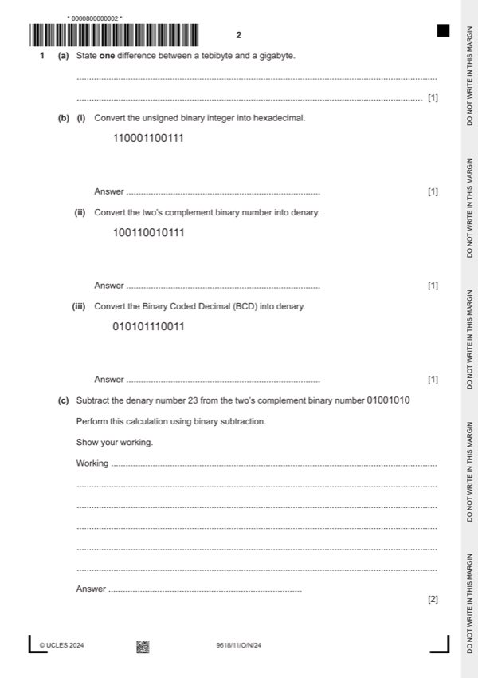

Question 1

Original paper page 2
Part 1(a) — solution
- A tebibyte = 1024 gibibytes / 1 048 576 kibibytes / 240 bytes whereas a
- Tebi is binary prefix giga is denary prefix
Mark points
- A tebibyte = 1024 gibibytes / 1 048 576 kibibytes / 240 bytes whereas a
- Tebi is binary prefix giga is denary prefix
Part 1(b)(i) — solution
Answer: C67
1 mark for: 1
C67
Mark points
- Correct result: C67
Part 1(b)(ii) — solution
1 mark for: 1
−1641
Mark points
- Include the ideas shown in the solution above.
Part 1(b)(iii) — solution
Answer: 573
1 mark for: 1
573
Mark points
- Correct result: 573
Part 1(c) — solution
1 mark for working 1 mark for answer. 2
Working
Using the two’s complement and adding:
Mark points
- Include the ideas shown in the solution above.
Part 1(d) — solution
- The answer cannot be represented in the number of bits available
- The answer is larger than the maximum positive number that can be
- The answer is smaller than the most negative number that can be stored
Mark points
- The answer cannot be represented in the number of bits available
- The answer is larger than the maximum positive number that can be
- The answer is smaller than the most negative number that can be stored